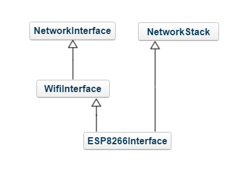

NetworkStack
As explained in the IP networking architecture page, the Socket API provides a TCP or UDP API on top of any IP based network stack. With the Socket API, you can write applications and libraries that use TCP or UDP sockets without regard to the type of IP connectivity. In addition to providing the TCP or UDP API, the Socket API includes virtual base classes for the different IP interface types.
In Mbed OS, the network stack can be either inside the connectivity module or inside the software stack Mbed OS provides. This page includes a porting guide for devices that provide external IP stacks. Usually, these are AT-command driven modules.
Please study the network connectivity pages from the architecture section before you start porting.
Class hierarchy
Drivers for devices that contain the IP stack inherit from two classes: a NetworkStack and a communication-specific subclass of NetworkInterface.
Please refer to the IP networking architecture for device types.
NetworkInterface Class
The current NetworkInterface subclasses are CellularInterface, EthernetInterface, MeshInterface and WiFiInterface. Your communication interface is a subclass of one of these, as well as the NetworkStack. For example, the ESP8266Interface inheritance structure looks like this:
Class
There are three pure virtual methods in the NetworkInterface class.
connect()- to connect the interface to the network.disconnect()- to disconnect the interface from the network.get_stack()- to return the underlying NetworkStack object.
Each subclass has distinct pure virtual methods. Visit their class references (linked above) to determine those you must implement.
NetworkStack class
NetworkStack provides a common interface that hardware shares. By implementing the NetworkStack, you can use a class as a target for instantiating network sockets.
NetworkStack provides these functions. Look for the function signature like declarator virt-specifier(optional) = 0 to determine which functions are pure virtual and which you must override in your child class.
Errors
Many functions of NetworkStack and NetworkInterface have return types of nsapi_error_t, which is a type used to represent error codes. You can see a list of these return codes. You can view the integer values of the error macros. A negative error code indicates failure, and 0 indicates success.
Functions that send or receive data, use nsapi_size_or_error_t type as a return value, where positive values indicate how much data has been sent or received, negative return values are error codes and zero is indication of closed connection.
The connect() method
High-level API calls to an implementation of a network-socket API are identical across networking protocols. The only difference is the interface object constructor and the method through which you connect to the network. For example, a Wi-Fi connection requires an SSID and password, a cellular connection requires an APN and Ethernet doesn't require any credentials. Each interface type may provide an overloaded connect() method with required parameters, but the preferred method is to offer these parameters as configuration values to allow the changing of network interfaces by changing a configuration file.
Below is a demonstration with the code that connects to a network and relies on the required provided configuration:
NetworkInterface *net = NetworkInterface::get_default_instance();
int return_code = net->connect();
if (return_code < 0)
printf("Error connecting to network %d\r\n", return_code);
To change the example to use other network interfaces or provide configuration values for Wi-Fi or other types, please see the default network interface.
Providing the Socket API
NetworkStack must implement the following API in order to support TCP or UDP sockets:
nsapi_error_t socket_open(nsapi_socket_t *handle, nsapi_protocol_t proto);
nsapi_error_t socket_close(nsapi_socket_t handle);
nsapi_error_t socket_bind(nsapi_socket_t handle, const SocketAddress &address);
nsapi_error_t socket_listen(nsapi_socket_t handle, int backlog);
nsapi_error_t socket_connect(nsapi_socket_t handle, const SocketAddress &address);
nsapi_error_t socket_accept(nsapi_socket_t server, nsapi_socket_t *handle, SocketAddress *address = 0);
nsapi_size_or_error_t socket_send(nsapi_socket_t handle, const void *data, nsapi_size_t size);
nsapi_size_or_error_t socket_recv(nsapi_socket_t handle, void *data, nsapi_size_t size);
nsapi_size_or_error_t socket_sendto(nsapi_socket_t handle, const SocketAddress &address, const void *data, nsapi_size_t size);
nsapi_size_or_error_t socket_sendto_control(nsapi_socket_t handle, const SocketAddress &address, const void *data, nsapi_size_t size, nsapi_msghdr_t *control, nsapi_size_t control_size);
nsapi_size_or_error_t socket_recvfrom(nsapi_socket_t handle, SocketAddress *address, void *buffer, nsapi_size_t size);
nsapi_size_or_error_t socket_recvfrom_control(nsapi_socket_t handle, SocketAddress *address, void *data, nsapi_size_t size, nsapi_msghdr_t *control, nsapi_size_t control_size);
nsapi_error_t setsockopt(nsapi_socket_t handle, int level, int optname, const void *optval, unsigned optlen);
nsapi_error_t getsockopt(nsapi_socket_t handle, int level, int optname, void *optval, unsigned *optlen);
Please note that as the blocking operation mode of Socket is provided by higher level Socket API, the underlying calls to NetworkStack object should not block. This forces some network operations to occur in a separate worker thread or in a shared event queue. Any calls to these functions should return NSAPI_ERROR_WOULD_BLOCK in case the operation cannot be immediately completed.
Please refer to the Doxygen documentation of NetworkStack for API descriptions.
Testing
To test new NetworkStack implementations, run the full set of Mbed OS socket tests.
Follow the guide from the Network Socket test plan.
Building and running the tests require you to provide the mbed_app.json as guided, and run the test with mbed test -n mbed-os-tests-network-*,mbed-os-tests-netsocket*.
Case study: ESP8266 Wi-Fi component
This example ports a driver for the ESP8266 Wi-Fi module to the NSAPI.
Required methods
Because ESP8266 is a Wi-Fi component, choose WiFiInterface as the NetworkworkInterface parent class.
WiFiInterface defines the following pure virtual functions:
set_credentials(const char *ssid, const char *pass, nsapi_security_t security).set_channel(uint8_t channel).get_rssi().connect(const char *ssid, const char *pass, nsapi_security_t security, uint8_t channel).connect().disconnect().scan(WiFiAccessPoint *res, nsapi_size_t count).
Additionally, WiFiInterface parent class NetworkInterface introduces NetworkStack *get_stack() as a pure virtual function.
You must also use NetworkStack as a parent class of the interface. You've already explored the pure virtual methods here.
Implementing connect()
Because a Wi-Fi connection requires an SSID and password, you need to implement a connect function that doesn't have these as a parameter.
One of the WiFiInterface pure virtual functions is set_credentials(const char *ssid, const char *pass, nsapi_security_t security). Implement set_credentials to store the SSID and password in private class variables. When you call connect() with no SSID and password, it is assumed that set_credentials has been called.
The next step is to implement this with the connect() method.
This is the first method that needs to interact with the Wi-Fi chip. You need to do some configuration to get the chip in a state where you can open sockets. You need to send some AT commands to the chip to accomplish this.
The AT commands you want to send are:
AT+CWMODE=3- This sets the Wi-Fi mode of the chip to 'station mode' and 'SoftAP mode', where it acts as a client connection to a Wi-Fi network, as well as a Wi-Fi access point.AT+CIPMUX=1- This allows the chip to have multiple socket connections open at once.AT+CWDHCP=1,1- To enable DHCP.AT+CWJAP=[ssid,password]- To connect to the network.AT+CIFSR- To query your IP address and ensure that the network assigned you one through DHCP.
Sending AT Commands
You can use the AT command parser to send AT commands and parse their responses. The AT command parser operates with a BufferedSerial object that provides software buffers and interrupt driven TX and RX for Serial.
ESP8266Interface uses an underlying interface called ESP8266 to handle the communication with the Wi-Fi modem. ESP8266 maintains an instance of AT command parser to handle communcation with the module. An instance of ESP8266 is in a private ESP8266Interface class variable _esp. In turn, ESP8266 maintains an instance of AT command parser called _parser.
To send AT commands 1-2, there is an ESP8266 method called startup(int mode). Use the AT command parser's send and recv functions to accomplish this.
The necessary code is:
bool ESP8266::startup(int mode)
{
...
bool success =
&& _parser.send("AT+CWMODE=%d", mode)
&& _parser.recv("OK")
&& _parser.send("AT+CIPMUX=1")
&& _parser.recv("OK");
...
The parser's send function returns true if the command succesully sent to the Wi-Fi chip. The recv function returns true if you receive the specified text. In the code example above, sending two commands and receiving the expected OK responses determines success.
Return values
So far, our connect method looks something like:
int ESP8266Interface::connect()
{
if (!_esp.startup(3)) {
return X;
If this !_esp.startup(3) evaluates to true, something went wrong when configuring the chip, and you should return an error code.
The NSAPI provides a set of error code return values for network operations. They documentation is here.
Of them, the most appropriate is NSAPI_ERROR_DEVICE_ERROR. So replace X in the return statement with NSAPI_ERROR_DEVICE_ERROR.
Finishing
You implemented similar methods to startup in ESP8266 to send AT commands 3-5. Then, you used them to determine the success of the connect() method. You can find the completed implementation here.
Implementing socket_open
The NetworkStack parent class dictates that you implement the functionality of opening a socket. This is the method signature in the interface:
int ESP8266Interface::socket_open(void **handle, nsapi_protocol_t proto)
This method doesn't necessitate any AT commands. The purpose is to create a socket in software and store the information in the handle parameter for use in other socket operations.
The ESP8266 module can only handle 5 open sockets, so you want to ensure that you don't open a socket when none are available. In the header file, use this macro for convenience: #define ESP8266_SOCKET_COUNT 5. Use a private class variable array to keep track of open sockets bool _ids[ESP8266_SOCKET_COUNT]. In socket_open, first iterate over _ids, and look for an element in the array whose value is false.
So far, the method looks like this:
int ESP8266Interface::socket_open(void **handle, nsapi_protocol_t proto)
{
// Look for an unused socket
int id = -1;
for (int i = 0; i < ESP8266_SOCKET_COUNT; i++) {
if (!_ids[i]) {
id = i;
_ids[i] = true;
break;
}
}
if (id == -1) {
return NSAPI_ERROR_NO_SOCKET;
}
...
After you've determined that you have an open socket, you want to store some information in the handle parameter. We've created a struct to store information about the socket that will be necessary for network operations:
struct esp8266_socket {
int id; // Socket ID number
nsapi_protocol_t proto; // TCP or UDP
bool connected; // Is it connected to a server?
SocketAddress addr; // The address that it is connected to
};
Create one of these, store some information in it and then point the handle at it:
int ESP8266Interface::socket_open(void **handle, nsapi_protocol_t proto)
{
...
struct esp8266_socket *socket = new struct esp8266_socket;
if (!socket) {
return NSAPI_ERROR_NO_SOCKET;
}
socket->id = id; // store the open ID we found above
socket->proto = proto; // TCP or UDP as specified in parameter
socket->connected = false; // default state not connected
*handle = socket;
return 0; // success
See the full implementation here.
Implementing socket_connect
The NetworkStack parent class dictates that you implement the functionality of connecting a socket to a remote server. This is the method signature in the interface:
int ESP8266Interface::socket_connect(void *handle, const SocketAddress &addr)
In this case, the handle is one that has been assigned in the socket_open method.
You can cast the void pointer to an esp8266_socket pointer. Do this in the body of socket_connect:
int ESP8266Interface::socket_connect(void *handle, const SocketAddress &addr)
{
struct esp8266_socket *socket = (struct esp8266_socket *)handle;
_esp.setTimeout(ESP8266_MISC_TIMEOUT);
const char *proto = (socket->proto == NSAPI_UDP) ? "UDP" : "TCP";
if (!_esp.open(proto, socket->id, addr.get_ip_address(), addr.get_port())) {
return NSAPI_ERROR_DEVICE_ERROR;
}
socket->connected = true;
return 0;
}
Focus on this line:
!_esp.open(proto, socket->id, addr.get_ip_address(), addr.get_port().
Access the socket ID and socket protocol from the members of esp8266_socket. Access the IP address and port of the server with the SocketAddress addr parameter.
This method sends the AT command for opening a socket to the Wi-Fi module and is defined as follows:
bool ESP8266::open(const char *type, int id, const char* addr, int port)
{
//IDs only 0-4
if(id > 4) {
return false;
}
return _parser.send("AT+CIPSTART=%d,\"%s\",\"%s\",%d", id, type, addr, port)
&& _parser.recv("OK");
}
In this instance, use the AT command parser to send AT+CIPSTART=[id],[TCP or UDP], [address] to the module. Expect to receive a response of OK. Only return true if you succesfully send the command AND receive an OK response.
Implementing socket_attach
The NetworkStack parent class dictates that you implement the functionality of registering a callback on state change of the socket. This is the method signature in the interface:
void ESP8266Interface::socket_attach(void *handle, void (*callback)(void *), void *data)
Call the specified callback on state changes, such as when the socket can recv/send/accept successfully.
ESP8266 can have up to five open sockets. You need to keep track of all their callbacks. This struct holds the callback as well as the data of these callbacks. It is stored as a private class variable _cbs:
struct {
void (*callback)(void *);
void *data;
} _cbs[ESP8266_SOCKET_COUNT];
The attach method is:
void ESP8266Interface::socket_attach(void *handle, void (*callback)(void *), void *data)
{
struct esp8266_socket *socket = (struct esp8266_socket *)handle;
_cbs[socket->id].callback = callback;
_cbs[socket->id].data = data;
}
Store the information in the _cbs struct for use on state changes. There is a method event() to call socket callbacks. It looks like this:
void ESP8266Interface::event() {
for (int i = 0; i < ESP8266_SOCKET_COUNT; i++) {
if (_cbs[i].callback) {
_cbs[i].callback(_cbs[i].data);
}
}
}
Look for sockets that have callbacks. Then, call them with the specified data!
Know when to trigger these events. You've used the ESP8266 class object, _esp, to attach a callback on a Serial RX event like so: _esp.attach(this, &ESP8266Interface::event). The _esp attach function creates _serial.attach(func), which attaches the function to the underlying UARTSerial RX event. Whenever the radio receives something, consider that a state change, and invoke any attach callbacks. A common use case is to attach socket_recv to a socket, so the socket can receive data asynchronously without blocking.
Testing
- Make a new Mbed project -
mbed new esp8266-driver-test. - Move into project folder -
cd esp8266-driver-test. - Add ESP8266 driver -
mbed add esp8266-driver. - Make a configuration file called
esp8266_config.jsonwith the following contents:
{
"config": {
"echo-server-addr" : {
"help" : "IP address of echo server",
"value" : "\"echo.mbedcloudtesting.com\""
},
"echo-server-port" : {
"help" : "Port of echo server",
"value" : "7"
}
},
"target_overrides": {
"*": {
"target.network-default-interface-type": "WIFI",
"nsapi.default-wifi-ssid": "\"WIFI_SSID\"",
"nsapi.default-wifi-password": "\"WIFI_PASSWORD\"",
"nsapi.default-wifi-security": "WIFI_SECURITY",
"esp8266.provide-default": true
}
}
}
- Run tests -
mbed test -m [mcu] -t [toolchain] -n mbed-os-tests-netsocket* --test-config esp8266_config.json. - View test results:
mbedgt: test suite report:
+--------------+---------------+---------------------------------+---------+--------------------+-------------+
| target | platform_name | test suite | result | elapsed_time (sec) | copy_method |
+--------------+---------------+---------------------------------+---------+--------------------+-------------+
| K64F-GCC_ARM | K64F | mbed-os-tests-netsocket-dns | TIMEOUT | 148.28 | default |
| K64F-GCC_ARM | K64F | mbed-os-tests-netsocket-tcp | TIMEOUT | 1035.26 | default |
| K64F-GCC_ARM | K64F | mbed-os-tests-netsocket-udp | FAIL | 383.8 | default |
| K64F-GCC_ARM | K64F | mbed-os-tests-network-interface | TIMEOUT | 508.17 | default |
| K64F-GCC_ARM | K64F | mbed-os-tests-network-wifi | OK | 131.04 | default |
+--------------+---------------+---------------------------------+---------+--------------------+-------------+
mbedgt: test suite results: 1 FAIL / 1 OK / 3 TIMEOUT
mbedgt: test case report:
+--------------+---------------+---------------------------------+---------------------------------------+--------+--------+---------+--------------------+
| target | platform_name | test suite | test case | passed | failed | result | elapsed_time (sec) |
+--------------+---------------+---------------------------------+---------------------------------------+--------+--------+---------+--------------------+
| K64F-GCC_ARM | K64F | mbed-os-tests-netsocket-dns | ASYNCHRONOUS_DNS | 0 | 0 | ERROR | 0.0 |
| K64F-GCC_ARM | K64F | mbed-os-tests-netsocket-dns | ASYNCHRONOUS_DNS_CACHE | 0 | 0 | SKIPPED | 0.0 |
| K64F-GCC_ARM | K64F | mbed-os-tests-netsocket-dns | ASYNCHRONOUS_DNS_CANCEL | 0 | 0 | SKIPPED | 0.0 |
| K64F-GCC_ARM | K64F | mbed-os-tests-netsocket-dns | ASYNCHRONOUS_DNS_EXTERNAL_EVENT_QUEUE | 0 | 0 | SKIPPED | 0.0 |
| K64F-GCC_ARM | K64F | mbed-os-tests-netsocket-dns | ASYNCHRONOUS_DNS_INVALID_HOST | 0 | 0 | SKIPPED | 0.0 |
| K64F-GCC_ARM | K64F | mbed-os-tests-netsocket-dns | ASYNCHRONOUS_DNS_NON_ASYNC_AND_ASYNC | 0 | 0 | SKIPPED | 0.0 |
| K64F-GCC_ARM | K64F | mbed-os-tests-netsocket-dns | ASYNCHRONOUS_DNS_SIMULTANEOUS | 0 | 0 | SKIPPED | 0.0 |
| K64F-GCC_ARM | K64F | mbed-os-tests-netsocket-dns | ASYNCHRONOUS_DNS_SIMULTANEOUS_CACHE | 0 | 0 | SKIPPED | 0.0 |
| K64F-GCC_ARM | K64F | mbed-os-tests-netsocket-dns | ASYNCHRONOUS_DNS_SIMULTANEOUS_REPEAT | 0 | 0 | SKIPPED | 0.0 |
| K64F-GCC_ARM | K64F | mbed-os-tests-netsocket-dns | ASYNCHRONOUS_DNS_TIMEOUTS | 0 | 0 | SKIPPED | 0.0 |
| K64F-GCC_ARM | K64F | mbed-os-tests-netsocket-dns | SYNCHRONOUS_DNS | 0 | 0 | SKIPPED | 0.0 |
| K64F-GCC_ARM | K64F | mbed-os-tests-netsocket-dns | SYNCHRONOUS_DNS_INVALID | 0 | 0 | SKIPPED | 0.0 |
| K64F-GCC_ARM | K64F | mbed-os-tests-netsocket-dns | SYNCHRONOUS_DNS_MULTIPLE | 0 | 0 | SKIPPED | 0.0 |
| K64F-GCC_ARM | K64F | mbed-os-tests-netsocket-tcp | TCPSOCKET_CONNECT_INVALID | 1 | 0 | OK | 0.11 |
| K64F-GCC_ARM | K64F | mbed-os-tests-netsocket-tcp | TCPSOCKET_ECHOTEST | 1 | 0 | OK | 2.93 |
| K64F-GCC_ARM | K64F | mbed-os-tests-netsocket-tcp | TCPSOCKET_ECHOTEST_BURST | 1 | 0 | OK | 29.44 |
| K64F-GCC_ARM | K64F | mbed-os-tests-netsocket-tcp | TCPSOCKET_ECHOTEST_BURST_NONBLOCK | 1 | 0 | OK | 28.92 |
| K64F-GCC_ARM | K64F | mbed-os-tests-netsocket-tcp | TCPSOCKET_ECHOTEST_NONBLOCK | 1 | 0 | OK | 4.91 |
| K64F-GCC_ARM | K64F | mbed-os-tests-netsocket-tcp | TCPSOCKET_ENDPOINT_CLOSE | 0 | 0 | SKIPPED | 0.0 |
| K64F-GCC_ARM | K64F | mbed-os-tests-netsocket-tcp | TCPSOCKET_OPEN_CLOSE_REPEAT | 1 | 0 | OK | 0.0 |
| K64F-GCC_ARM | K64F | mbed-os-tests-netsocket-tcp | TCPSOCKET_OPEN_LIMIT | 1 | 0 | OK | 0.22 |
| K64F-GCC_ARM | K64F | mbed-os-tests-netsocket-tcp | TCPSOCKET_RECV_100K | 0 | 0 | ERROR | 0.0 |
| K64F-GCC_ARM | K64F | mbed-os-tests-netsocket-tcp | TCPSOCKET_RECV_100K_NONBLOCK | 0 | 0 | SKIPPED | 0.0 |
| K64F-GCC_ARM | K64F | mbed-os-tests-netsocket-tcp | TCPSOCKET_RECV_TIMEOUT | 0 | 0 | SKIPPED | 0.0 |
| K64F-GCC_ARM | K64F | mbed-os-tests-netsocket-tcp | TCPSOCKET_SEND_REPEAT | 0 | 0 | SKIPPED | 0.0 |
| K64F-GCC_ARM | K64F | mbed-os-tests-netsocket-tcp | TCPSOCKET_SEND_TIMEOUT | 0 | 0 | SKIPPED | 0.0 |
| K64F-GCC_ARM | K64F | mbed-os-tests-netsocket-tcp | TCPSOCKET_THREAD_PER_SOCKET_SAFETY | 1 | 0 | OK | 2.72 |
| K64F-GCC_ARM | K64F | mbed-os-tests-netsocket-udp | UDPSOCKET_ECHOTEST | 1 | 0 | OK | 3.07 |
| K64F-GCC_ARM | K64F | mbed-os-tests-netsocket-udp | UDPSOCKET_ECHOTEST_BURST | 1 | 0 | OK | 54.99 |
| K64F-GCC_ARM | K64F | mbed-os-tests-netsocket-udp | UDPSOCKET_ECHOTEST_BURST_NONBLOCK | 1 | 0 | OK | 55.94 |
| K64F-GCC_ARM | K64F | mbed-os-tests-netsocket-udp | UDPSOCKET_ECHOTEST_NONBLOCK | 1 | 0 | OK | 10.03 |
| K64F-GCC_ARM | K64F | mbed-os-tests-netsocket-udp | UDPSOCKET_OPEN_CLOSE_REPEAT | 1 | 0 | OK | 0.0 |
| K64F-GCC_ARM | K64F | mbed-os-tests-netsocket-udp | UDPSOCKET_OPEN_LIMIT | 1 | 0 | OK | 0.22 |
| K64F-GCC_ARM | K64F | mbed-os-tests-netsocket-udp | UDPSOCKET_SENDTO_INVALID | 1 | 0 | OK | 19.14 |
| K64F-GCC_ARM | K64F | mbed-os-tests-netsocket-udp | UDPSOCKET_SENDTO_REPEAT | 1 | 0 | OK | 200.85 |
| K64F-GCC_ARM | K64F | mbed-os-tests-netsocket-udp | UDPSOCKET_SENDTO_TIMEOUT | 0 | 2 | FAIL | 4.25 |
| K64F-GCC_ARM | K64F | mbed-os-tests-network-interface | NETWORKINTERFACE_CONN_DISC_REPEAT | 0 | 0 | SKIPPED | 0.0 |
| K64F-GCC_ARM | K64F | mbed-os-tests-network-interface | NETWORKINTERFACE_STATUS | 0 | 0 | ERROR | 0.0 |
| K64F-GCC_ARM | K64F | mbed-os-tests-network-interface | NETWORKINTERFACE_STATUS_GET | 0 | 0 | SKIPPED | 0.0 |
| K64F-GCC_ARM | K64F | mbed-os-tests-network-interface | NETWORKINTERFACE_STATUS_NONBLOCK | 0 | 0 | SKIPPED | 0.0 |
| K64F-GCC_ARM | K64F | mbed-os-tests-network-wifi | WIFI-CONNECT | 1 | 0 | OK | 6.56 |
| K64F-GCC_ARM | K64F | mbed-os-tests-network-wifi | WIFI-CONNECT-DISCONNECT-REPEAT | 1 | 0 | OK | 32.84 |
| K64F-GCC_ARM | K64F | mbed-os-tests-network-wifi | WIFI-CONNECT-NOCREDENTIALS | 1 | 0 | OK | 0.0 |
| K64F-GCC_ARM | K64F | mbed-os-tests-network-wifi | WIFI-CONNECT-PARAMS-CHANNEL | 1 | 0 | OK | 0.11 |
| K64F-GCC_ARM | K64F | mbed-os-tests-network-wifi | WIFI-CONNECT-PARAMS-CHANNEL-FAIL | 1 | 0 | OK | 0.11 |
| K64F-GCC_ARM | K64F | mbed-os-tests-network-wifi | WIFI-CONNECT-PARAMS-NULL | 1 | 0 | OK | 0.0 |
| K64F-GCC_ARM | K64F | mbed-os-tests-network-wifi | WIFI-CONNECT-PARAMS-VALID-SECURE | 1 | 0 | OK | 5.41 |
| K64F-GCC_ARM | K64F | mbed-os-tests-network-wifi | WIFI-CONNECT-PARAMS-VALID-UNSECURE | 1 | 0 | OK | 6.65 |
| K64F-GCC_ARM | K64F | mbed-os-tests-network-wifi | WIFI-CONNECT-SECURE | 1 | 0 | OK | 5.25 |
| K64F-GCC_ARM | K64F | mbed-os-tests-network-wifi | WIFI-CONNECT-SECURE-FAIL | 1 | 0 | OK | 15.32 |
| K64F-GCC_ARM | K64F | mbed-os-tests-network-wifi | WIFI-CONSTRUCTOR | 1 | 0 | OK | 0.0 |
| K64F-GCC_ARM | K64F | mbed-os-tests-network-wifi | WIFI-GET-RSSI | 1 | 0 | OK | 7.42 |
| K64F-GCC_ARM | K64F | mbed-os-tests-network-wifi | WIFI-SCAN | 1 | 0 | OK | 2.61 |
| K64F-GCC_ARM | K64F | mbed-os-tests-network-wifi | WIFI-SCAN-NULL | 1 | 0 | OK | 17.6 |
| K64F-GCC_ARM | K64F | mbed-os-tests-network-wifi | WIFI-SET-CHANNEL | 1 | 0 | OK | 0.11 |
| K64F-GCC_ARM | K64F | mbed-os-tests-network-wifi | WIFI-SET-CREDENTIAL | 1 | 0 | OK | 0.0 |
+--------------+---------------+---------------------------------+---------------------------------------+--------+--------+---------+--------------------+
mbedgt: test case results: 1 FAIL / 20 SKIPPED / 32 OK / 3 ERROR
mbedgt: completed in 2207.72 sec
mbedgt: exited with code 4